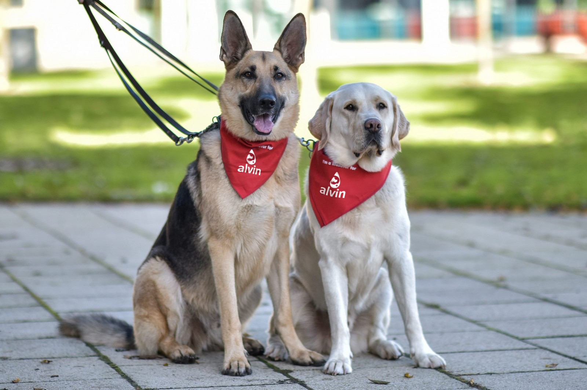
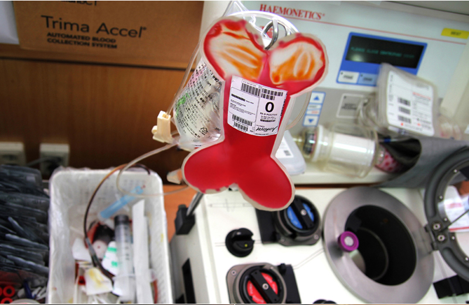
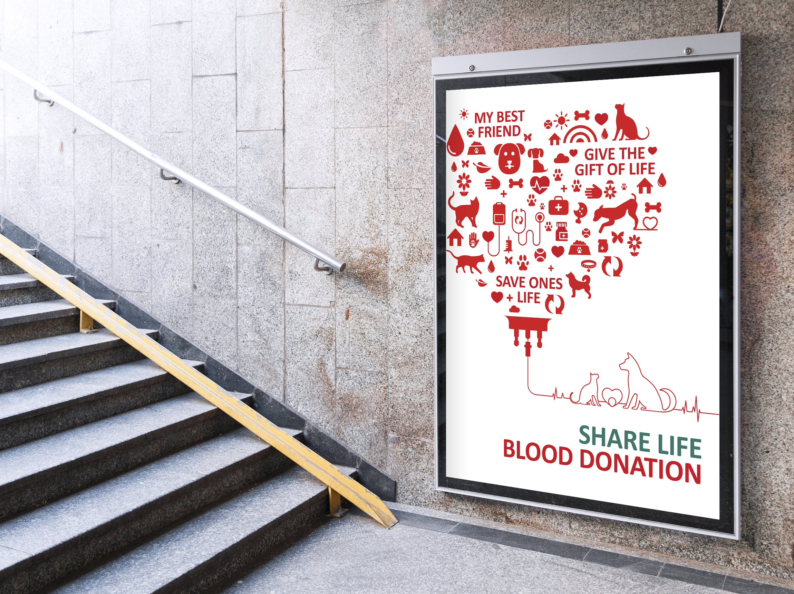

앨빈 서비스
국제혈액은행 앨빈은 NFC기반의 ID카드를 제작하여 독자적인 공혈견 관리 서비스를 구축하였습니다.
전국의 동물병원 수 4,526개(2019년 기준) 대다수의 동물병원들이
강아지나 고양이의 혈액을 구하는데 어려움을 겪고 있습니다.
헌혈 프로그램을 통해 고양이의 생명을 살리고 건강한 삶과 행복한
세상을 함께 만들어 주세요.
-
공혈견에겐 휴식을, 아픈 친구에겐 생명을
반려견을 살리기위해 자신을 희생하는 '공혈견'과 반려견 헌혈에 대해 알아보자
-
반려견 헌혈문화 같이 만들어가요!
공혈견의 수요를 줄일 수 있는 가장 현실적인 해결책은 헌혈 가능한 반려견 가족들의 자발적인 헌혈 참여 뿐!
-
공혈견 캠패인 함께하기
정기적인 건강검진, 헌혈 후 제공되는 푸짐한 후원선물 , 헌혈 후 칭찬을 통한 자부심 심어주기